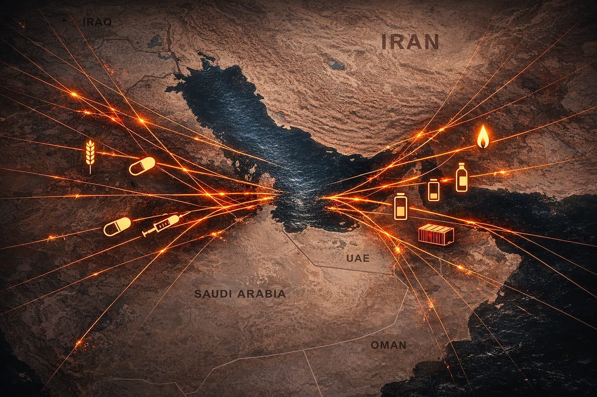

On February 28, 2026, the United States and Israel launched surprise airstrikes on Iran during active nuclear negotiations. The Supreme Leader was killed. Iran responded with missiles and drones against Israel, US bases, and Gulf states. Then Iran did the thing that turned a regional war into a global one: it closed the Strait of Hormuz.
Most coverage treats this as an energy story. Oil prices above $100 a barrel. Gas station pain. Markets jittery.
That framing is a problem. Not because the energy story is false ” it isn’t ” but because it hides everything underneath.
The Strait of Hormuz is not just an oil pipeline. It is the single point of failure for a chain of dependencies that connects the war in Iran to the price of bread in Bangladesh, the planting costs of corn farmers in Iowa, the cooking fuel of hundreds of millions of people in India, and the ability of hospitals in Pakistan to keep the lights on.
This map does not address whether the pre-war trajectory ” including Iran’s nuclear program and regional proxy operations ” carried its own risks. That is a separate analysis. What this map shows is the structural reality of what the chokepoint closure is doing right now, and what it will do if it continues. The data cited here comes from reporting, trade publications, and institutional analyses published during an active, fast-moving conflict. Some figures will be revised as the situation develops. The structural dependencies are more stable than the specific numbers.
Here is what is difficult to see when coverage is organized by beat rather than by mechanism.
The First Layer: What Everyone Sees
Twenty percent of the world’s oil and a large share of its liquefied natural gas move through Hormuz. When Iran closed the strait, vessel traffic dropped by roughly 90 percent. Oil prices surged. This is the layer the news covers. It is real.
But the mechanism underneath the price is more important than the price itself.
Iran didn’t close Hormuz to hurt oil markets. It closed Hormuz as a calculated strategic response ” the most powerful lever available to a non-nuclear country under attack by nuclear-armed states. The closure is not an inevitable physical reflex. It is a policy choice, and like any policy choice it carries consequences for populations far beyond the conflict. But the mechanism is geographic leverage: if you can’t match the military that is bombing your universities and bridges, you weaponize control of a shared resource to make the entire world feel enough economic pain that it pressures your attacker to stop.
This is not “economic warfare” in the way sanctions are economic warfare. Sanctions are applied by the powerful against the weak. Hormuz closure is applied by the attacked against everyone ” including countries that have nothing to do with the war. The farmer in East Africa whose fertilizer shipment is stranded in a Qatari port is collateral damage of a conflict he has no voice in and no power to stop.
That structural asymmetry ” the attacked country weaponizing a shared resource to conscript uninvolved populations into pressuring the attacker ” is the novel mechanism in this conflict. It did not exist at this scale in any previous war.
The Second Layer: What Almost No One Sees
Here is where the coverage fails.
The Gulf region produces approximately a third of the world’s urea exports, a fifth of its ammonia, a fifth of its phosphate fertilizers, and a quarter of its sulfur. Sulfur is a byproduct of oil and gas processing. Without it, phosphate rock cannot be converted into fertilizer that plants can absorb.
These are not optional inputs. Nitrogen fertilizer is what enables modern agriculture to produce enough food for eight billion people.
Since the strait closed, urea prices have risen roughly 50 percent. Some Indian and Bangladeshi fertilizer plants have shut down or cut production because their Qatari LNG feedstock stopped arriving. Eighty-six percent of ships carrying fertilizers from the Persian Gulf to East Africa have ceased operations. These are already realized.
The timing is the cruelest part. The Northern Hemisphere spring planting season is happening right now. Farmers are making planting decisions this week and next week that determine what grows ” or doesn’t grow ” through the rest of 2026 and into 2027. Corn, which is the primary feedstock for US beef, poultry, and dairy production, is a nitrogen-hungry crop. Rising fertilizer costs do not automatically mean farmers plant less ” if corn prices have also risen, the incentive ratios may partially compensate. But the American Farm Bureau Federation has already raised public concern about input costs, and analysts warn that if disruptions persist into late April, the combination of higher costs and delayed deliveries could translate into lower application rates and altered planting decisions. The downstream food price inflation would follow months later, long after the headlines have moved on.
This is the cascade:
War → Strait closure → LNG stranded → fertilizer plants shut down → urea prices spike → spring planting costs increase → potential for reduced yields → food price inflation → hunger pressure on the most vulnerable populations
The first four links are realized. The last four are in motion, with outcomes depending on how long the disruption persists. Almost none of this appears in the war coverage, because the coverage is organized around the war itself ” who bombed what, who said what, whether there will be a ceasefire ” not around the structural damage propagating outward through dependency chains.
An honest map must also show the countervailing forces. Markets reroute. Egypt is ramping fertilizer exports through Mediterranean ports. The IEA released 400 million barrels from strategic petroleum reserves. China’s domestically sourced fertilizer production is not constrained by Hormuz. Iran itself has granted selective passage to vessels from China, Russia, India, Pakistan, Iraq, Malaysia, Thailand, and the Philippines. These forces dampen the cascade ” but they do not eliminate it. The rerouting takes time the planting season does not have. The alternative capacity does not match the volume that normally transits Hormuz. And the countervailing mechanisms do not cover all commodities equally: oil has strategic reserves and alternative pipelines; fertilizer has no strategic reserve at all; helium has no alternative production source at scale; ethylene oxide has no rerouting path. The elasticity is real but deeply uneven, and it is weakest for exactly the commodities that affect the most vulnerable populations.
The Third Layer: What You’re Not Supposed to Connect
There is no internationally coordinated strategic reserve for fertilizer. Oil has the IEA’s strategic petroleum reserves. Fertilizer has nothing. The system that feeds the world operates without a safety net, and the single largest physical bottleneck in that system just closed.
G7 countries didn’t build fertilizer reserves because fertilizer isn’t glamorous enough to appear in national security planning. The Saudi pipeline built to bypass Hormuz carries oil, not ammonia. When a ship captain braves the strait, they carry oil ” which is more valuable ” not fertilizer. When a navy offers to escort vessels, they escort oil tankers, not fertilizer shipments.
This is the structural hierarchy operating in plain sight: the commodity that determines whether people can eat is systematically deprioritized below the commodity that determines whether people can drive.
Iran has agreed in principle to allow humanitarian and fertilizer shipments through the strait. Some carve-outs exist ” Chinese, Russian, Indian, Iraqi, and Pakistani vessels have been granted access. But these exemptions are narrow, subject to change without notice, and don’t cover the volume needed to prevent the damage that is already being locked in by the planting-season timeline.
The Fourth Layer: The Dependencies Nobody Mentions
The cascade doesn’t stop at food. It reaches into your medicine cabinet, your hospital, your children’s clothing, and the battery in the electric car that was supposed to free you from oil dependence.
Two different mechanisms are operating here and they should not be confused. First, the transit closure blocks exports from Gulf producers who are not themselves under attack ” their products are stranded because the shipping route is closed. Second, direct military strikes have damaged infrastructure in Iran and hit facilities in Bahrain, Kuwait, and the UAE, with QatarEnergy declaring force majeure on LNG exports. Both mechanisms produce shortages, but they have different timelines for resolution: a transit closure can be reversed by agreement; physical destruction requires reconstruction.
Cooking fuel. Already happening. LPG is the cooking fuel for hundreds of millions of people in India. India gets roughly 90 percent of its LPG imports from the Middle East. The shortage is already forcing people to cook with coal, firewood, and cow dung. This is not an inconvenience. It is a respiratory health crisis. Indoor air pollution from biomass cooking is one of the leading causes of death in the developing world. The Hormuz closure is, right now, pushing hundreds of millions of people back to cooking methods that kill.
Your medicine. Costs rising now; shortages building. Between 90 and 99 percent of all modern pharmaceuticals rely on petrochemicals at some point in their synthesis, packaging, or delivery chain ” the range is wide because the degree of dependence varies from direct synthesis to packaging materials. Paracetamol ” the most commonly used pain reliever on earth ” requires acetic anhydride, a petrochemical derivative. Metformin, the primary oral treatment for Type 2 diabetes, depends on petrochemical raw materials. So do statins for cholesterol, common antibiotics, antihistamines, and the PEG compounds used in manufacturing mRNA vaccines. When naphtha supply tightens, input costs rise across the pharmaceutical production chain. India’s pharmaceutical sector ” the world’s largest generic drug supplier ” is already reporting soaring input costs and a 50 percent rise in critical plastics costs for medical devices.
Your hospital. Costs rising now; safety risk building. Syringes, catheters, IV bags, surgical instruments, blister packs for pills ” all made from petrochemical-derived polymers. Asian manufacturers in Singapore, South Korea, and Indonesia are declaring force majeure and cutting output. The most alarming dependency is sterilization: ethylene oxide, derived from petrochemical feedstocks, is the dominant sterilization method for roughly half of all sterilized medical devices globally. Supply disruption doesn’t just raise prices. It pressures the ability to sterilize surgical equipment.
MRI and semiconductors. Partially realized; long-term risk. Qatar produces a significant share of the world’s helium as a byproduct of LNG processing. The transit closure has already stranded helium exports. Separately, Iranian retaliatory strikes have damaged energy infrastructure across several Gulf states; if Qatari LNG facilities sustain significant damage, repairs could take years. Helium cools the superconducting magnets in MRI machines and is essential for semiconductor wafer manufacturing. The roughly 50,000 MRI machines in use worldwide face tightening helium supply, with the severity depending on whether the disruption remains a transit problem or becomes a production-destruction problem. Meanwhile, air freight costs for medical supplies have risen 400 percent. Marine insurance premiums for vessels in the strait have surged over 1,000 percent.
Everything in plastic. Already happening. Roughly 84 percent of the Middle East’s polyethylene output ” one of the world’s most widely used plastics ” depends on the Strait of Hormuz for export. Plastic prices have already risen 15 percent and are expected to climb further as current stocks deplete. The average American uses 255 kilograms of new plastics annually, more than four times the global average. Every product that ships in plastic packaging ” food, medicine, electronics, consumer goods ” gets more expensive. Naphtha, the key petrochemical feedstock, has no adequate substitute at scale, and the Middle East is the primary source.
Your clothes. Building. The Asian garment industry relies on petrochemicals shipped through the strait to produce synthetic fabrics. Textiles, detergents, and the packaging they ship in are all petroleum derivatives.
The green transition. Structural constraint, not yet acute. The synthetic graphite used in electric vehicle battery anodes requires anode-grade petroleum coke ” a specific byproduct of oil refining. Petroleum coke is a residual of the refining process, not something refineries choose to produce or not produce. But not all petcoke is suitable for battery anodes, and the logistics of getting anode-grade material to battery manufacturers are disrupted by the same shipping closures affecting everything else. The green transition that is supposed to end oil dependence is structurally dependent on a refined petroleum byproduct that must travel through a war zone to reach its manufacturers.
Sulfur. Already happening. Half of all global sulfur shipments transit Hormuz. Without sulfur, phosphate fertilizer production stops worldwide ” not just in the Gulf. This second-order dependency multiplies every other fertilizer shortage: even producers outside the Gulf can’t make phosphate fertilizer if they can’t get sulfur.
The shipping network itself. Already happening. The Strait of Hormuz has been effectively closed since late February. The Red Sea has been disrupted by Houthi attacks since late 2023, predating this war ” but the two closures now compound each other. The only viable ocean route for most cargo is around the Cape of Good Hope, adding 10 to 14 days per shipment and pulling vessel capacity out of rotation. This isn’t just a delay. It means fewer ships are available for every route, which raises costs on routes that have nothing to do with the Middle East.
The power shift. Accumulating daily. Every day the strait stays closed, China and Russia’s relative commodity position strengthens. China uses domestically sourced coal for fertilizer production ” it is not constrained by Hormuz. Russia remains the world’s largest fertilizer exporter. As Gulf supply disappears, countries that need fertilizer, petrochemicals, and energy face a narrowing set of suppliers. The commodity leverage of the war’s opponents grows with each day of disruption ” a structural consequence that appears nowhere in the stated justifications for starting the war.
Every one of these dependencies is documented. None of them are secrets. But they don’t appear in the same frame. The oil story is covered by energy reporters. The fertilizer story is covered by agricultural reporters. The pharmaceutical dependency is covered by healthcare trade publications. The plastics cascade is covered by industry analysts. The LPG crisis is covered by development reporters. The medical device sterilization risk is in a MedTech supply chain blog. The shipping timeline requires knowing that the Red Sea disruption is a separate, older conflict now compounding a new one. The war itself is covered by foreign correspondents. Assembling the full mechanism map requires reading across all of them and asking how the dependencies connect.
The Fifth Layer: What This Means for You
This war is being marketed as a security operation against Iranian nuclear capability. The stated justifications have changed repeatedly. What has not changed is the structural reality of what the chokepoint closure is doing. Some of these cascades are already realized. Others are building. Others depend on how long the disruption persists.
Already happening:
If you live in India, Pakistan, or Bangladesh ” your cooking fuel may have already been cut, and hundreds of millions of people are burning biomass indoors right now.
If you buy anything packaged in plastic ” prices are already up 15 percent, with further increases expected as inventories deplete.
If you depend on fertilizer shipments from the Gulf ” 86 percent of those shipments to East Africa have stopped. Urea prices are up 50 percent.
Building now, outcomes in weeks to months:
If you take paracetamol for a headache, metformin for diabetes, or statins for cholesterol ” your drug supply chain’s input costs are rising through the war zone.
If you eat food that was grown with fertilizer ” the spring planting season is happening right now with disrupted supply and sharply higher input costs. The food price effects will arrive in the second half of 2026.
If your hospital uses sterilized disposable equipment ” the ethylene oxide supply that sterilizes half of all medical devices is under pressure.
Long-term structural risk:
If you have ever needed an MRI ” helium supply depends on whether Gulf LNG infrastructure suffers lasting physical damage. That timeline is years, not weeks.
If you support the transition to electric vehicles ” the battery supply chain needs anode-grade petroleum coke that must travel through disrupted shipping routes.
If you live anywhere that imports goods by sea ” both the Strait of Hormuz and the Red Sea are disrupted, adding two weeks and hundreds of percent in cost to every shipment.
In all cases:
And if you are watching the coverage ” you are seeing the war, the oil price, and the diplomatic maneuvering. You are not seeing the cascade that connects a military strike to whether a farmer can afford to plant corn, whether a hospital can sterilize a syringe, or whether a mother in rural India can cook dinner without poisoning her lungs.
The populations most affected by this cascade are the populations with the least voice in whether this war happens, continues, or ends. The farmer in East Africa whose fertilizer shipment is stranded didn’t vote for the government that launched the strikes. The diabetic patient in Mumbai whose metformin gets more expensive didn’t choose to close the Strait of Hormuz. The corn farmer in Iowa facing doubled urea costs didn’t ask for a war launched during peace negotiations.
The mechanism of chokepoint coercion conscripts the entire world into a conflict. The fragmentation of coverage across separate beats ensures that most of the conscripted population doesn’t understand how they’ve been conscripted, or by what chain of dependencies they’re being harmed.
What You Can Do With This Map
This article is not an argument for or against any side in the conflict. It is a structural map of downstream consequences. It does not assess whether the war was justified, whether the pre-war trajectory was sustainable, or whether the outcomes will ultimately prove better or worse than the alternatives. Those are political judgments that require information this map does not contain.
What the map does is show you the dependencies. When someone says “the war is nearing completion,” ask what happens to the fertilizer shipments that didn’t arrive in time for spring planting. When someone says “Iran is holding the global economy hostage,” ask who launched the attack that caused the closure. When someone says “this doesn’t affect America,” ask about the urea price at the port of New Orleans.
The map does not tell you what to believe. It tells you what to check.
If you found this useful, the method I used to produce it ” extracting structural mechanisms from contested information environments and mapping the dependencies that no single-source coverage reveals ” is what I’m building. More on that soon.
This analysis was produced using a governed analytical method that extracts structural mechanisms from contested information environments. The method, the instruments, and the governance architecture behind them are proprietary. The output is public because the dependencies mapped here affect everyone.
Mechanism map summary
Status: 🔴 Already realized · 🟡 Building now · 🔵 Long-term risk
🔴 Chokepoint coercion Military attack on chokepoint controller → geographic leverage converts bilateral war to global pressure → uninvolved populations conscripted via supply dependency
🔴🟡 Fertilizer cascade LNG/gas supply cut → nitrogen fertilizer collapses, urea +50% → spring planting costs spike; food inflation risk 2026-27
🔴 Cooking fuel regression LPG cut to dependent populations → cooking reverts to biomass → respiratory health crisis for hundreds of millions
🟡 Pharmaceutical dependency Petrochemical feedstocks tightened → drug synthesis, packaging, delivery chains face rising costs → pain relief, diabetes, antibiotic, vaccine supply stressed
🟡 Medical device sterilization Ethylene oxide supply pressured → half of sterilized medical devices depend on this method → hospital safety at risk
🔴 Plastics cascade Naphtha + polyethylene cut (84% via Hormuz) → packaging, consumer goods more expensive → US disproportionately exposed (255 kg/person/year)
🔴 Sulfur multiplication 50% of global sulfur shipments halted → phosphate fertilizer constrained globally → shortage multiplied beyond nitrogen
🟡🔵 Helium constraint Transit closure strands exports; facility damage risks years of lost production → MRI + semiconductor manufacturing constrained
🔵 Green transition constraint Anode-grade petroleum coke shipping disrupted → EV battery materials logistics constrained → oil alternative transition slowed
🟡 Textile supply cut Synthetic fabric petrochemicals cut → Asian garment industry constrained → clothing costs rise, textile workers lose income
🔴 Logistics amplification Hormuz closed (Feb 2026) + Red Sea disrupted (since late 2023) → +10-14 days/shipment, +400% air freight, +1000% insurance
🔴🟡 Geopolitical leverage transfer All cascades compound → China/Russia commodity position strengthens daily → global supplier landscape narrows toward war’s opponents
Source data from Carnegie Endowment, Atlantic Council, UNCTAD, WEF, IEA, and trade reporting. Conflict ongoing; figures subject to revision.